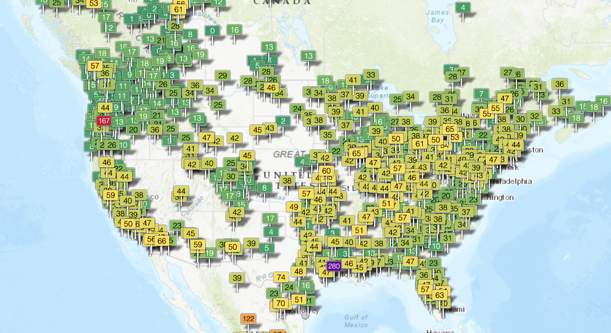
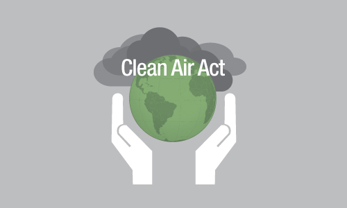
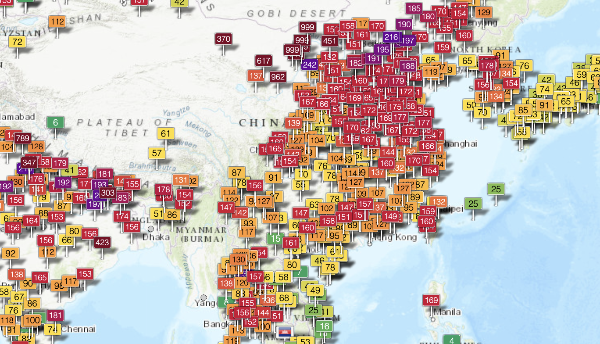
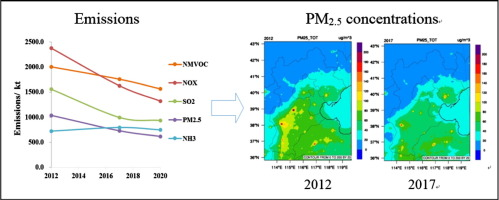

🇺🇸 United States 🇺🇸
✅ Air Quality Index In The US ✅
The United States maintains an average Air Quality Index (AQI) at the "green" level, which indicates good air quality with minimal pollution levels. This means that the air is generally safe to breathe for residents across the country, posing little to no health risk to the general population. A green AQI signifies that common pollutants, such as ground-level ozone, particulate matter, carbon monoxide, sulfur dioxide, and nitrogen dioxide, are present in low concentrations, reducing the likelihood of respiratory issues or other health complications.
Clean air contributes to overall public health, supporting better lung function, reducing the risk of chronic diseases, and promoting a higher quality of life. While most areas in the U.S. experience good air quality, certain regions may still face temporary spikes in pollution due to factors such as wildfires, industrial activity, and weather conditions, emphasizing the need for ongoing monitoring and environmental regulations to maintain air quality standards.
👩🏼⚖️ Laws Implimented To Maintain Good Air Quality 👩🏼⚖️
1. The Environmental Protection Agency (EPA)
The Environmental Protection Agency (EPA) is the federal agency responsible for protecting human health and the environment in the United States. Established in 1970, the EPA enforces environmental laws, conducts scientific research, and sets regulations to limit pollution. One of its primary roles is monitoring and improving air quality across the country by enforcing standards that reduce harmful pollutants such as carbon monoxide, nitrogen oxides, and particulate matter. Through various initiatives, the EPA works to limit emissions from industrial sources, transportation, and power plants, ensuring cleaner air for all residents.
In addition to enforcing air quality regulations, the EPA collaborates with state and local governments to implement air pollution control programs. The agency provides funding and technical support to help states meet national air quality standards, as well as develop strategies for reducing smog and other pollutants. The EPA also plays a key role in addressing emerging environmental challenges, such as climate change and air pollution from wildfire smoke. For more information on the EPA’s initiatives and policies, visit the EPA tab at the top of the page.
2. The Clean Air Act
The Clean Air Act, first passed in 1970 and later amended in 1990, is the cornerstone of air quality regulation in the United States. This federal law empowers the EPA to set limits on harmful air pollutants, ensuring that industries and vehicles comply with emission standards to protect public health and the environment. The law has led to significant reductions in pollutants like sulfur dioxide and lead, contributing to better air quality nationwide. By setting National Ambient Air Quality Standards (NAAQS), the Clean Air Act helps maintain an Air Quality Index (AQI) that, on average, remains in the "green" zone, meaning the air is safe for the general population.
The Clean Air Act also introduced key programs to address specific environmental concerns, such as acid rain, ozone depletion, and toxic air pollutants. The law requires industries to adopt cleaner technologies and encourages state and local governments to develop air quality plans tailored to their regions. Over the decades, the Clean Air Act has been instrumental in reducing air pollution-related illnesses and improving overall public health. To learn more about air quality initiatives and steps you can take to help reduce pollution, visit the Additional Resources tab at the top of the page.
🇨🇳 China 🇨🇳
❌ Air Quality Index In China ❌
China’s air quality remains a major public health concern, with many of its cities frequently experiencing air pollution levels in the "red" zone on the Air Quality Index (AQI). A red AQI ranking indicates that air pollution is unhealthy for the general population, with higher risks for children, the elderly, and individuals with respiratory conditions. Poor air quality in China is largely driven by industrial emissions, coal-fired power plants, vehicle pollution, and seasonal factors like weather patterns that trap pollutants in urban areas. Exposure to high levels of air pollution has been linked to respiratory diseases, cardiovascular problems, and other serious health conditions. It is estimated that poor air quality contributes to approximately 2 million premature deaths in China each year.
- Reducing the use of coal
- Develop new and clean energy sources, such as natural gas
- Promote the use of electric vehicles
- Utalize public transportation
👩🏼⚖️ Laws Implimented To Maintain Good Air Quality 👩🏼⚖️
1. The Air Pollution Prevention and Control Action Plan
The Air Pollution Prevention and Control Action Plan, introduced in 2013, was a major step in China’s efforts to tackle severe air pollution. The plan set ambitious targets to reduce fine particulate matter (PM2.5) concentrations in major urban areas, including Beijing, Shanghai, and the Pearl River Delta. It aimed for a 25% reduction in PM2.5 levels in Beijing and surrounding areas by 2017, while other key regions were expected to see similar improvements. The Chinese government focused on reducing coal consumption, promoting cleaner industrial production methods, and encouraging alternative energy sources to lessen reliance on fossil fuels. Additionally, pollution-heavy industries were required to adopt stricter emission controls, with heightened monitoring and penalties for non-compliance.
A crucial component of this plan was the investment in clean energy and infrastructure improvements. The government significantly expanded public transportation networks to limit vehicle emissions and introduced incentives for cleaner, energy-efficient technologies. Coal-fired power plants and factories were required to upgrade their systems or face closure if they failed to meet emission standards. China also improved air quality monitoring capabilities, increasing the number of monitoring stations to provide real-time data to the public. These measures contributed to significant air quality improvements in several regions, demonstrating the effectiveness of nationwide regulatory efforts.
2. The Blue Sky Protection Campaign
Building on the success of the 2013 plan, China launched the Blue Sky Protection Campaign in 2018, an intensified effort to further improve air quality across the country. This campaign introduced stricter pollution controls on industrial emissions, requiring factories and power plants to transition to cleaner technologies or face closure. The campaign also expanded coal restrictions, pushing for more extensive use of natural gas and renewable energy sources to power homes and businesses. In addition, the government limited the number of vehicles allowed on the roads in major cities, promoting electric and hybrid vehicle adoption.
The Blue Sky Protection Campaign also increased enforcement efforts, with stricter inspections and penalties for polluters. Government agencies worked closely with local authorities to ensure compliance, and businesses were subjected to surprise inspections to prevent violations. Heavy polluting industries, such as steel and cement manufacturing, faced heightened regulations, while new environmental policies were put in place to ensure the continued reduction of harmful emissions. By focusing on industrial reforms, cleaner energy, and stricter oversight, the Blue Sky Protection Campaign has played a critical role in China’s ongoing battle against air pollution.